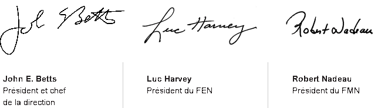

John E. Betts

Luc Harvey

Robert Nadeau
Bonjour McDonald's du Canada!
Le Plan pour gagner a su guider notre réussite depuis plus d'une décennie. Ce modèle continue à mettre en lumière les domaines où nous devons nous concentrer davantage afin de récolter les plus grands bénéfices pour le système. Il constitue une pierre d'assise qui nous a bien servis et qui continue à guider notre réussite.
Pour nous mener à destination, le plan de cette année a évolué, tant dans les domaines de concentration que de présentation sous son nouveau format numérique. Notre transformation se poursuit.
Ce plan triennal nous mènera de 2015 à 2017, le 50e anniversaire de McDonald's au Canada. Songez-y! Peu de marques ont réussi à tisser des liens significatifs de longue date avec ses clients comme la nôtre.
En regardant vers 2017, nous devons poursuivre notre transformation de façon pertinente afin de répondre aux besoins changeants de nos clients. Nous y parviendrons en misant encore davantage sur les domaines où nous devons récolter les plus importants gains.
Nos 5 priorités en restaurant pour 2015 sont:
- Alimenter la fierté de notre PERSONNEL
- Être passionné par la QUALITÉ
- Offrir une EXPÉRIENCE-CLIENT mémorable
- Bâtir un contact NUMÉRIQUE avec nos clients
- RENTABILITÉ : Optimiser les ventes et les bénéfices
Il n'en tient qu'à nous d'atteindre notre vision dans chacun de ces domaines. Chaque membre de notre système joue un rôle essentiel dans l'avenir de notre entreprise et de notre marque. Je vous demande, en lisant le plan, votre engagement envers notre marque et de prendre des mesures spécifiques dans votre restaurant ou votre service, qui raffermiront nos liens avec nos clients et nos employés.
En tirant profit de la force de notre système, nous ATTEINDRONS notre objectif d'être l'endroit et l'expérience préférés des Canadiens pour manger, boire et travailler.
Notre Vision
Être l'endroit et l'expérience préférés des
Canadiens pour manger, boire et travailler !
-
Notre marque
Les Canadiens ont confiance en notre marque; nous créons les liens les plus solides possibles avec nos clients.
-
Notre menu
est connu pour ses Classiques contemporains.
-
Notre expérience-client
est mémorable et inégalée dans l'industrie.
-
Nos restaurants
offrent une commodité sans pareil et fixent la norme de l'industrie.
-
Notre personnel
est reconnu comme le meilleur qui soit et nos employés sont fiers de travailler chez nous.
Notre Plan S’Articule Autour De Nos Clients
À titre de franchisés, d’employés de restaurant, de personnel de bureau, de fournisseurs et d’agences-partenaires, nous avons tous la responsabilité de collaborer pour assurer la réussite de ce Plan pour gagner. Nous devons commencer en créant et en offrant une expérience authentiquement McDonald’s que nos clients apprécieront, qu’ils soient en famille, de jeunes adultes, seuls ou des gens âgés.
C’est poser des gestes simples, comme saluer les clients, les regarder et les écouter. C’est servir des aliments frais à chaque client, exactement comme il s’attend à les recevoir. C’est être à l’affût des occasions d’en faire un peu plus pour égayer sa journée.
Si nous commençons chaque jour en pensant à surprendre et à épater nos clients dans nos restaurants et à nos services-au-volant, nous gagnerons toujours.
Priorités 2015 en restaurant
Il n'en tient qu'à nous de MULTIPLIER LES RAISONS et LES
FAÇONS pour nos clients de nous aimer
-
Alimenter la fierté de
notre Personneldécouvrez plus -
Être passionné par la Qualité
découvrez plus -
Offrir une
Expérience-Client mémorabledécouvrez plus -
Bâtir un contact Numérique
découvrez plus -
RENTABILITÉ : Optimiser les
ventes et les bénéficesdécouvrez plus
Notre But
Nous définirons une promesse de la marque significative et distinctive qui misera sur le goût, la qualité et l'abordabilité.
Notre Plan Prend Vie
Grâce à Nos Valeurs
Nous mettons l’expérience des clients à la base de toutes nos activités.
Nous sommes engagés envers notre personnel.
Nous croyons dans le système de McDonald’s.
Nous faisons affaire de manière éthique.
Nous redonnons à la collectivité.
Nous faisons progresser notre entreprise de manière rentable.
Nous nous efforçons de nous améliorer continuellement.
Le trajet vers 4-5-5
Dans nos restaurants traditionnels moyens, nous continuerons à viser des ventes annuelles de 4 millions de dollars, accueillir 500 000 clients et générer une encaisse de 500 000 $.
Nous avons 3 buts simples et ciblés.
Nous sommes une entreprise ouverte 24 h tous les jours et nous devons tenir notre promesse à chaque visite en nous concentrant sur une croissance rentable proportionnelle tout au long de la journée et de la semaine.
Nous devons tirer profit des améliorations que nous avons apportées en matière de capacité et des principes de base de la main-d'œuvre pour exécuter toute la journée, chaque jour.